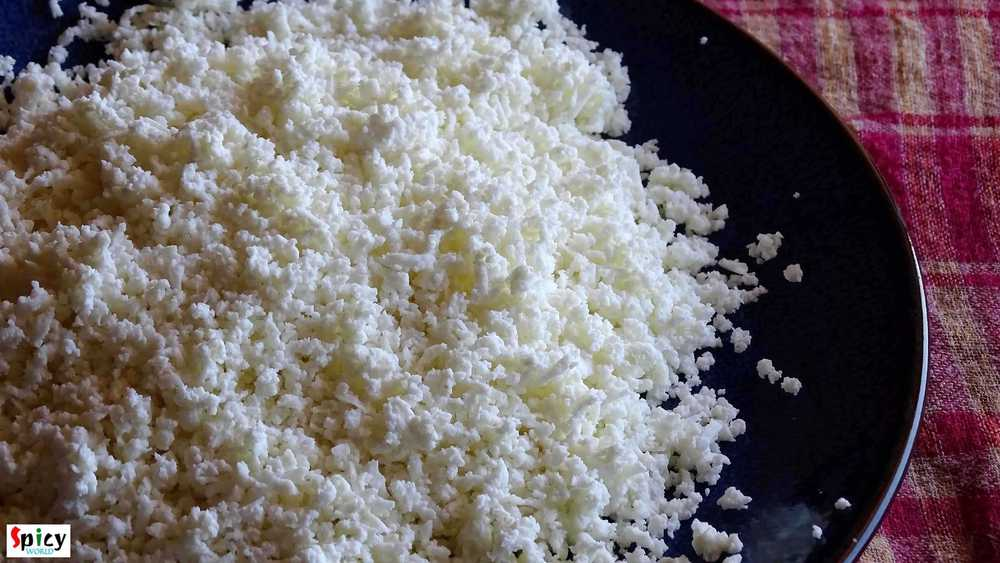
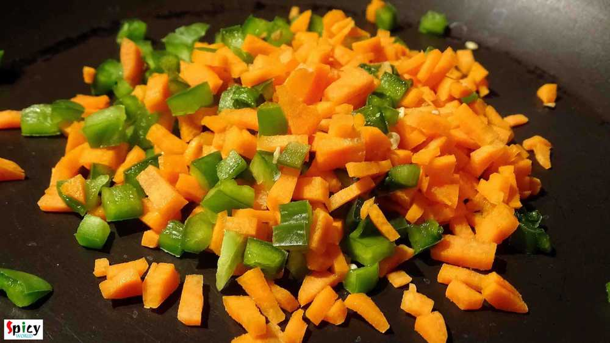
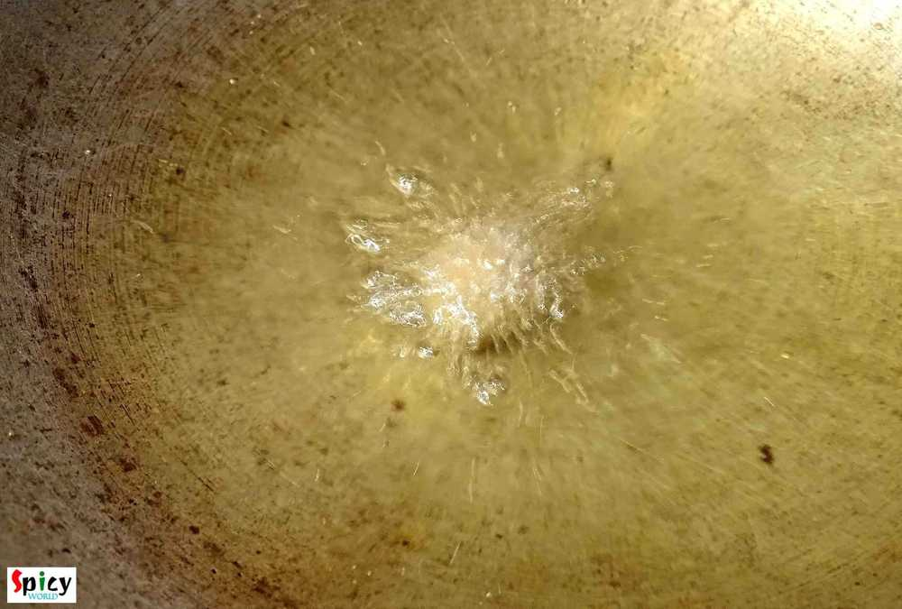
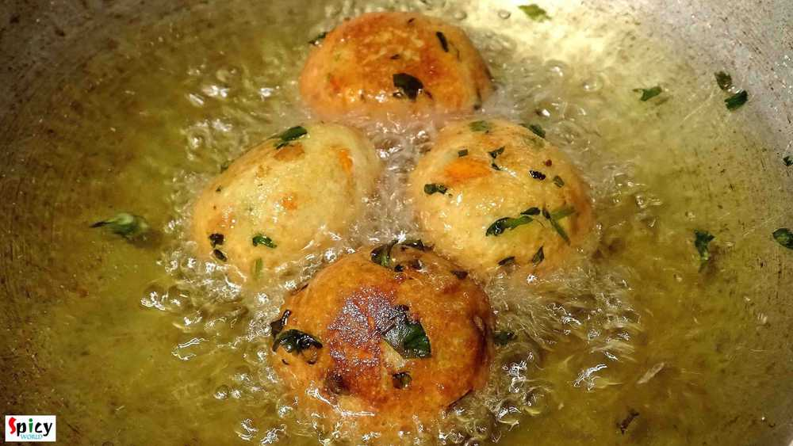

Simple and Easy Recipes
Paneer Kofta / Fried Cottage Cheese Balls
© 2016 Spicy World, Published on: Dec 9, 2015
'Kofta' is a very flexible food item, you can serve them as starter or you can soak them in gravy and serve as maincourse also. This was my very first attempt on 'kofta' and from the beginning I was a bit nervous because I often heard that while frying them, kofta has a chance to break. But I carefully maintained the proportion of ingredients and taaddaaa ...!! All of my 'kofta's came out perfectly and they were scrumptious. Try this in your kitchen and let me know how it turns out.

Ingredients
- 2 cups of paneer chunks.
- 1 small boiled potato (shredded).
- 5 Tablespoons of finely chopped onion.
- 1 Teaspoon of finely chopped green chilies.
- 6 Tablespoons of finely chopped carrots and bell peppers.
- 2 Teaspoons of chopped coriander leaves.
- 2 Teaspoons cornflour.
- half Teaspoon red chilli powder.
- 2 Teaspoons garam masala powder.
- half Teaspoon dry mango powder (amchoor).
- Salt and sugar.
- Lots of raisins.
- White oil for deep frying.

Steps
First shred the paneer cubes finely.
Then heat a pan.
Add the chopped carrots and bell peppers. Don't add oil. Saute them for 2-3 minutes, all of their water will dry out.
Remove them from the pan and add in the paneer.
Now add rest of the ingredients one by one except raisins, salt and sugar.
Mix them first, then add salt and pinch of sugar. Again mix it very well with your hand.
Now make a lemon sized ball from the mixture. Put 2-3 raisins (or chopped dry fruits) in the center, seal the edges and again roll it gently.
Make all the balls from the rest of the mixture.
Now for safety put a small portion of the mixture in the medium hot oil first. If it came out perfectly then add rest of the paneer balls.
Oil should be medium hot, not cold or smoking hot.
Fry them till becomes golden in color.
Remove the kofta-s from the oil and keep them on a tissue paper.
Your paneer kofta is ready ...
Serve them hot with tea ...
")